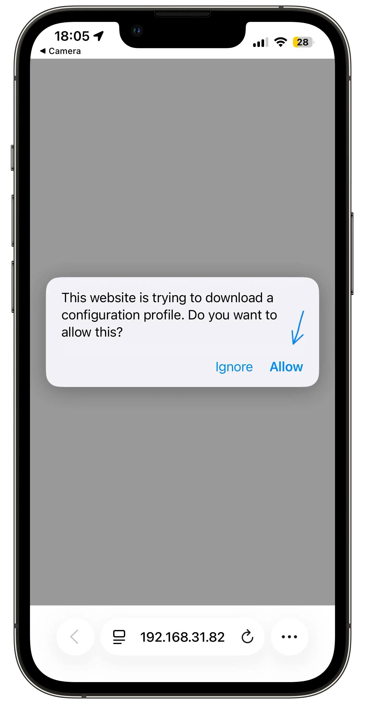

Why is this certificate needed and is it safe?
What am I installing? A small security certificate, generated right on your own PC — nothing about it ever leaves your local network. It just tells your phone "trust this one connection" so it can talk to your computer over Wi-Fi. It can't see or touch anything else — not your other apps, not other websites, nothing. The app doesn't send any data anywhere, ever — no analytics, no logs, no phoning home. And since it's all open-source, you don't have to take our word for it: you (or your AI coding assistant) can go read the exact code that generates this certificate right here: internal/ca.
Why is this even necessary? Safari (WebKit) simply refuses to share gyroscope/motion data or keep a live WebSocket connection open unless the page is loaded over a secure, encrypted connection (HTTPS/WSS) — that's an Apple privacy rule, and no app can get around it. Since there's no way to get a "real," publicly-trusted certificate for a private local address, self-signing one and asking your phone to trust it is the only way to satisfy that rule without ever going through the internet.
